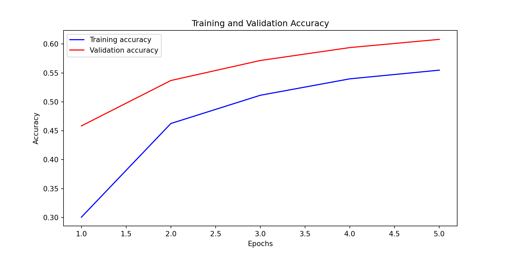

# Define the neural network model
model_no_dropout = Sequential([
Input(shape=(X_train.shape[1],)),
Dense(128, activation='relu'),
Dense(64, activation='relu'),
Dense(y_train.shape[1], activation='softmax')])Neural Network
In this section, we will build a neural network model to predict the make of a car based on the features at our disposal. We will preprocess the data, split it into training and testing sets, define the neural network architecture, compile the model, train it and evaluate its performance.
Preprocessing and splitting the data
The dataset contains different types of data. Some columns are numerical (like “city_mpg_fuel_type_1” or “charge_time_240v”), and some are categorical (“vehicle_class” or “fuel_type”). We identify and separate these two types of columns. Separating numerical and categorical columns is an essential step in data preprocessing because they require different types of handling to prepare them for machine learning algorithms. The numerical columns need to be scaled by adjusting them so they have a mean of zero and a standard deviation of one, which helps the machine learning algorithm perform better. While the categorical columns need to be one-hot encoded which creates a binary column a format that the machine learning model can understand.
The data is split into two parts: training and testing. The training set is used to train the model, and the testing set is used to evaluate its performance. This split ensures that we can test how well the model generalizes to new, unseen data.
Building the neural network models and training them
Base Neural Network
We chose to use a neural network. This neural network consists of layers of neurons, where each layer applies transformations to the data. The first layer takes the input features. Then some Hidden layers help the model learn complex patterns. In the end, the output layer predicts the probability of each car manufacturer. The first layes, the input layer, takes the input features. The second layers is set to 128 neurons, the third to 64 neurons and the last layer, the output layer, has as many neurons as there are car manufacturers. The activation function used in the hidden layers is the Rectified Linear Unit (ReLU), and the output layer uses the Softmax activation function. The model is compiled with the Adam optimizer and the categorical crossentropy loss function.
We used activation functions in the hidden layers to introduce non-linearity into the model. The ReLU activation function is used in the hidden layers because it is computationally efficient and helps the model learn complex patterns in the data. The Softmax activation function is used in the output layer because it converts the model’s raw output into probabilities that sum to one. This allows us to interpret the model’s output as the probability of each car manufacturer.
We used the following hyperparameters:
- epochs: 5 (Corresponds to the number of times the model sees the entire dataset during training.)
- batch_size: 32 (Corresponds to the number of samples that the model processes before updating the weights.)
- validation_split: 0.2 (Corresponds to the fraction of the training data to be used as validation data.)
The model is trained for 5 epochs with a batch size of 32. The validation split is set to 0.2, which means that 20% of the training data is used for validation.

As we can see, at each epoch, the accuracy is increasing and the loss is decreasing. The model is learning from the training data and improving its predictions.
In the end, we have a case of overfitting. The model performs well on the training data but not as well on the testing data. This is an issue because it limits the possibility of generalizing the model to new data.
Final Training Accuracy: 0.5896Final Validation Accuracy: 0.5931Test Accuracy: 0.5823Overall, the performance of the model is still good. However the quality can be improved. To address this issue, we can introduce Dropout layers in the neural network. We will also see if Cross-validation can help to improve the model’s performance later.
Neural Network with Dropout layers
Dropout layers randomly set a fraction of input units to zero during training, which helps prevent overfitting by forcing the model to learn more robust features. We will tune the dropout rate to find the optimal value that balances training and validation accuracy and that insure to reduce overfitting.
# Function to create and compile the model
def create_model(dropout_rate=0.0):
model = Sequential([
Input(shape=(X_train.shape[1],)),
Dense(128, activation='relu'),
Dropout(dropout_rate),
Dense(64, activation='relu'),
Dropout(dropout_rate),
Dense(y_train.shape[1], activation='softmax')
])
model.compile(optimizer=Adam(), loss='categorical_crossentropy', metrics=['accuracy'])
return model
We can see that the model with a dropout rate of 0.2 has the best performance on the test set. This model has a good balance between training and validation accuracy, and it generalizes well to new data. It also eliminate the overfitting issue. We will use this dropout rate to train the final model with droopout layers.
# Out best dropout rate used for the following model.
dropout_rate_to_plot = 0.2
Code
# Helper function to calculate metrics from confusion matrix
def calculate_metrics(cm):
# True Positive, False Positive, False Negative, True Negative
tp = cm[1, 1]
fp = cm[0, 1]
fn = cm[1, 0]
tn = cm[0, 0]
sensitivity = tp / (tp + fn) # True Positive Rate (Recall)
specificity = tn / (tn + fp) # True Negative Rate
balanced_accuracy = (sensitivity + specificity) / 2
return sensitivity, specificity, balanced_accuracy
# Define the dropout rate to use
dropout_rate = 0.2
# Train the model with the specified dropout rate
print(f"Testing model with dropout rate: {dropout_rate}")Testing model with dropout rate: 0.2Code
model = create_model(dropout_rate=dropout_rate)
# Train the model and collect training accuracy
history = model.fit(X_train_split, y_train_split, epochs=5, batch_size=32, verbose=0, validation_data=(X_val, y_val))
# Evaluate the model on the validation set
val_loss, val_accuracy = model.evaluate(X_val, y_val, verbose=0)
# Evaluate the model on the test set
test_loss, test_accuracy = model.evaluate(X_test, y_test, verbose=0)
# Store the last epoch's training accuracy, validation accuracy, and test accuracy
training_accuracy = history.history['accuracy'][-1]
training_accuracies = [training_accuracy]
validation_accuracies = [val_accuracy]
test_accuracies = [test_accuracy]
# Print rounded accuracy values
print(f"Training accuracy: {round(training_accuracy, 2)}, Validation accuracy: {round(val_accuracy, 2)}, Test accuracy: {round(test_accuracy, 2)}")Training accuracy: 0.55, Validation accuracy: 0.61, Test accuracy: 0.59Code
# Generate the confusion matrix and metrics
y_pred = np.argmax(model.predict(X_test), axis=-1)
[1m 1/264[0m [37m━━━━━━━━━━━━━━━━━━━━[0m [1m3s[0m 15ms/step
[1m260/264[0m [32m━━━━━━━━━━━━━━━━━━━[0m[37m━[0m [1m0s[0m 194us/step
[1m264/264[0m [32m━━━━━━━━━━━━━━━━━━━━[0m[37m[0m [1m0s[0m 194us/stepCode
y_true = np.argmax(y_test, axis=-1)
cm = confusion_matrix(y_true, y_pred)
# Convert confusion matrix to a DataFrame for better readability
cm_df = pd.DataFrame(cm, index=[f'Actual {i}' for i in range(cm.shape[0])],
columns=[f'Predicted {i}' for i in range(cm.shape[1])])
# Print the confusion matrix as a table
print(f'Confusion Matrix for Dropout Rate {dropout_rate}')Confusion Matrix for Dropout Rate 0.2Code
print(cm_df) Predicted 0 Predicted 1 ... Predicted 92 Predicted 93
Actual 0 0 0 ... 0 0
Actual 1 0 37 ... 0 0
Actual 2 0 0 ... 0 0
Actual 3 0 0 ... 0 0
Actual 4 0 0 ... 0 0
... ... ... ... ... ...
Actual 89 0 0 ... 0 1
Actual 90 0 0 ... 0 0
Actual 91 0 0 ... 0 0
Actual 92 0 0 ... 0 0
Actual 93 0 0 ... 0 7
[94 rows x 94 columns]Code
# Calculate and print sensitivity, specificity, and balanced accuracy
sensitivity, specificity, balanced_accuracy = calculate_metrics(cm)<string>:10: RuntimeWarning: invalid value encountered in scalar divideCode
print(f"Sensitivity: {sensitivity:.2f}, Specificity: {specificity:.2f}, Balanced Accuracy: {balanced_accuracy:.2f}")Sensitivity: 1.00, Specificity: nan, Balanced Accuracy: nanThe model is trained using the training data. During training, the model learns by adjusting its internal parameters to minimize the difference between its predictions and the actual car manufacturers in the training data. The model is trained for a fixed number of iterations called epochs.